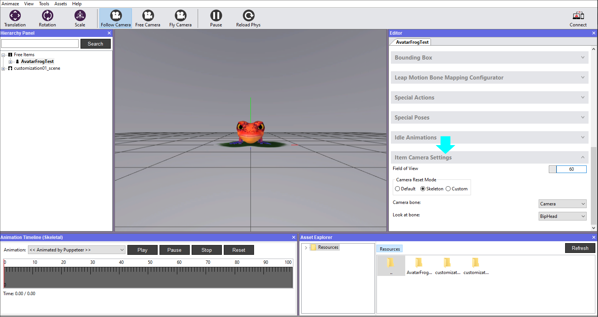
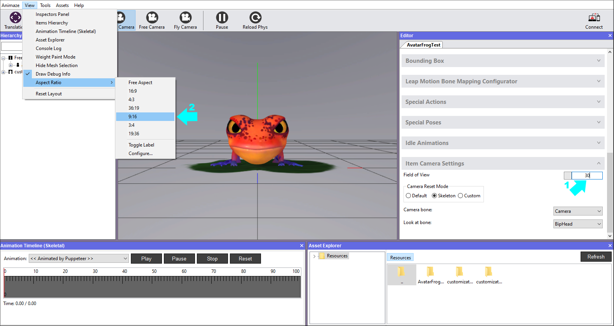
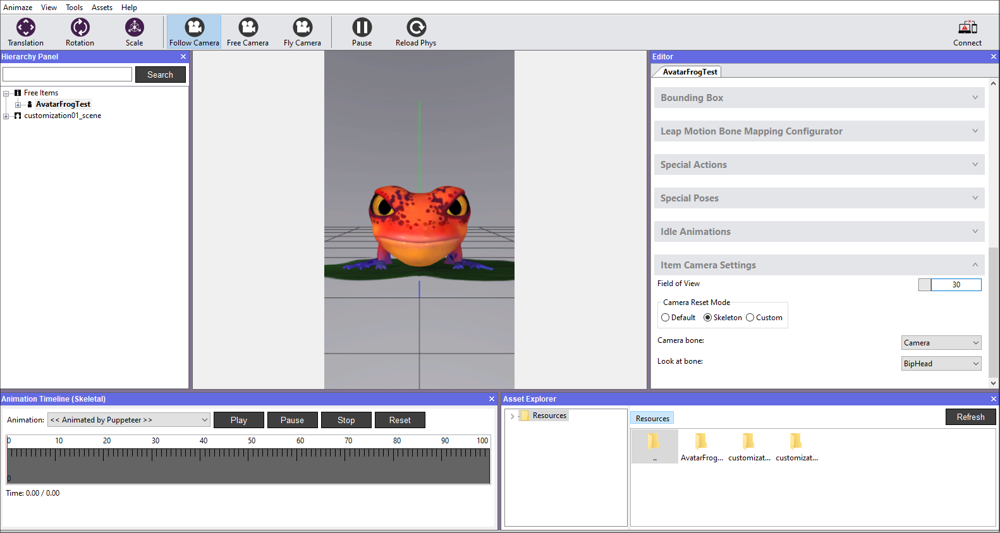

Frame the avatar for the iOS App
You can control how the avatar is displayed in the app by configuring the camera settings. Don’t worry too much about framing your avatar perfectly. You can refine how the avatar is framed in the app by pinching to zoom in and out.
Here is how to do it:
-
Open Animaze Editor
-
In the Editor Panel to the right, scroll down and click to expand the Item Camera Settings bar.

-
You can set the wideness of the camera view angle, by changing the values for Field of View on FollowCamera. We set the FoV to 30 and we can preview it as in the iOS app by using the Aspect Ratio debugger, to see how it will look like on a mobile screen. Go to View, select Aspect Ratio and pick one of the aspect ratios listed there.

-
This is how it would look on a mobile phone with a screen aspect ratio of 9:16. If you’re happy with the result, save the item in the Hierarchy Panel.

-
Save the item in the Hierarchy Panel to keep the settings for next time you load the avatar

As you create your own or modify existing avatars, you may need to reconfigure certain elements. Learn more about those advanced configurations in the following sections.